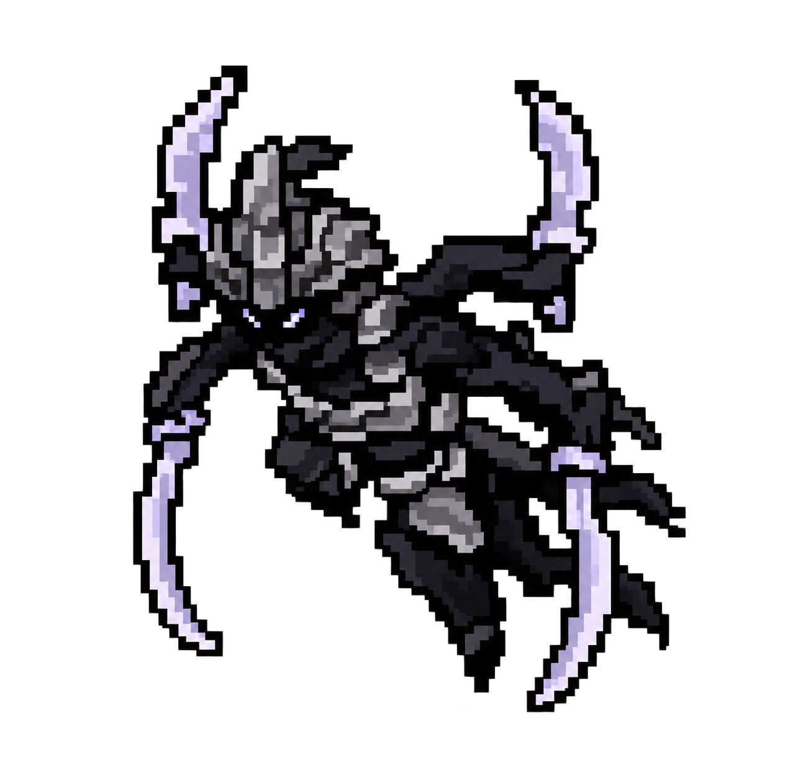

Hunt Custom · VIP
Pyramid of Azhr'khal
As três True Asuras, suas fraquezas elementais e os drops da pirâmide.
Level 900Hazard 10Conta VIP

Hunt 2 · level 900 · hazard 10 · VIP
Pyramid of Azhr'khal
Três asuras verdadeiras, cada uma com um elemento dominante e uma fraqueza clara. Vida alta para o nível de experiência: 49.200 de HP e 24.300 de exp nas três. Armadura 110, defesa 110, mitigação 3,10, velocidade 250 a 265. Stone bag nível 1 a 0,03%.
True Cursed Asura
morte
Vida / exp49.200 / 24.300
Velocidade260
Teto de dano~1.620 /s
Dano. Morte 55%, físico 30%, life drain 15%.
- Melee até 2.060 e maldição de 11.200 ao longo do tempo
- Death no alvo 2.300–2.900, alcance 7
- Death em área raio 3, 2.300–2.900
- Life drain em cruz 1.460–2.060
Defesa. Acelera +320 por 5 s com 50% de chance a cada 2 s. Sem cura direta.
Morte+80%
Físico+15%
Sagrado−10%
Energia, terra, fogo, gelo−5%
| Drop | Chance | Qtd. |
|---|---|---|
| Crystal coin | 44,12% | 1–2 |
| Gold ingot | 14,71% | 1 |
| Undead heart | 11,61% | 4–8 |
| Demonic essence | 9,75% | 4–9 |
| Knight armor | 6,97% | 1 |
| Golden lotus brooch | 3,48% | 1 |
| Peacock feather fan | 3,14% | 1–3 |
| Skullcracker armor | 0,52% | 1 |
| Stone bag nível 1 | 0,03% | 1 |
| Tainted heart | 0,01% | 1 |
True Blessed Asura
sagrado
Vida / exp49.200 / 24.300
Velocidade250
Teto de dano~1.620 /s
Dano. Físico 50%, sagrado 42%, life drain 8%.
- Melee até 2.020
- Holy no alvo 1.950–2.490
- Holy em área 1.300–1.660, raio 4
- Holy em cruz 2.130–2.490
- Life drain em onda 1.130–1.420
- Lentidão −100 por 3 s
Defesa. Cura 200–400 (15%) e acelera +320 por 5 s (15%).
Sagrado+80%
Físico+15%
Morte−20%
Energia, terra, fogo, gelo−5%
| Drop | Chance | Qtd. |
|---|---|---|
| Platinum coin | 42,66% | 20–32 |
| Crystal coin | 42,66% | 1–2 |
| Small topaz | 14,22% | 4–13 |
| Gold ingot | 14,22% | 1 |
| Golden lotus brooch | 6,74% | 1 |
| Golden armor / crusader helmet | 3,41% cada | 1 |
| Demonic essence | 3,37% | 1–3 |
| Peacock feather fan / small diamond | 3,03% | 1–3 / 3–9 |
| Yellow gem | 2,43% | 1–5 |
| Stone bag nível 1 | 0,03% | 1 |
True Enrage Asura
físico
Vida / exp49.200 / 24.300
Velocidade265
Teto de dano~1.620 /s
Dano. Físico 65%, life drain 35%. Derruba magic walls.
- Melee até 1.770
- Físico no alvo 2.130–2.710
- Físico em área raio 4, 1.660–2.240
- Life drain em área 1.230–1.840
- Sparks chain 1.660–2.240
Defesa. Cura 250–500 (15%) e acelera +320 por 5 s (15%).
Físico+30%
Energia, terra, fogo, gelo−10%
Sagrado / morte−10%
| Drop | Chance | Qtd. |
|---|---|---|
| Platinum coin | 47,69% | 13–32 |
| Crystal coin | 47,68% | 1–2 |
| Golden lotus brooch | 15,90% | 1–6 |
| Peacock feather fan | 10,54% | 1–3 |
| Bloodshot giant eye | 10,50% | 1 |
| Crown legs | 3,77% | 1 |
| Crusader helmet | 3,39% | 1 |
| Giant sword | 0,56% | 1 |
| Stone bag nível 1 | 0,03% | 1 |
| Darklight heart | 0,01% | 1 |
Como ler os números
A chance de loot usa a base do servidor: 100.000 = 100%. O valor entre parênteses no dano é o teto do golpe, não a média por segundo. A fatia de cada elemento vem do comentário de balanceamento do monstro. Resistência positiva reduz o dano recebido; valor negativo aumenta. Hazard exigido nos portais é o de Gnomprona Gardens. Todos esses acessos pedem conta VIP.